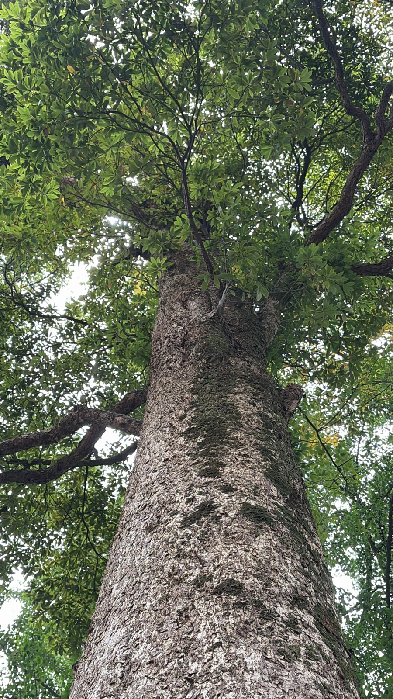

乔木 · 植物界
楠木 Phoebe zhennan

中国特有的珍贵用材树种，材质致密芳香、耐腐防虫，历史上是皇家宫殿的首选用材，被列为国家二级保护植物。
- 分类
- 门被子植物门纲木兰纲目樟目科樟科属楠属
- 栖息环境
- 海拔 1000–1500 米的常绿阔叶林中，喜温暖湿润，幼树耐阴
- 地理分布
- 中国四川、贵州、湖北、湖南等地，以四川雅安一带所产最著名
- 保护级别
- 暂无评估；中国国家二级保护野生植物
物种志
楠木为常绿大乔木，高可达 30 m，胸径可达 1.5 m，树干通直，树皮灰褐色、纵裂；小枝与顶芽密被黄褐色柔毛。叶片革质，椭圆形至披针形，上面深绿光亮，下面密被短柔毛，叶脉明显。花序为圆锥花序，生于新枝上部，花小、黄绿色；果实为浆果状核果，椭圆形，成熟时黑色，基部具宿存花被。
楠木是中国特有树种，野生分布于四川、贵州、湖北、湖南等地海拔 1000–1500 m 的常绿阔叶林中，喜温暖湿润、耐阴，适宜深厚肥沃的酸性土壤。木材淡黄褐色，纹理细腻、香气独特，耐腐防虫，不易变形，是建筑、家具、雕刻与棺木的上等材料；明清皇家宫殿大量使用楠木，故有“金丝楠木”之称。由于长期过度采伐，楠木野生资源濒临枯竭，被列为国家二级保护野生植物。
形态与习性
- 株高可达 30 m，胸径可达 1.5 m
- 花期4–5 月，花小、黄绿色
- 果期9–10 月，核果成熟时黑色
- 光照幼树耐阴，成年后喜光
- 水分喜湿润，怕积水
- 土壤深厚肥沃的酸性壤土
- 主要用途宫殿建筑、家具雕刻、金丝楠木工艺品
趣味知识
- 楠木木材芳香耐腐，古代皇家宫殿的梁柱多选用楠木，故有“金丝楠”之名。
- 楠木生长缓慢，一棵可用的楠木往往需要上百年才能成材。
- 楠木木材在光线下呈现金丝般的纹理，被视为中国传统家具中的名贵材料。
- 由于长期采伐，野生楠木资源稀少，已被列为国家二级保护野生植物。